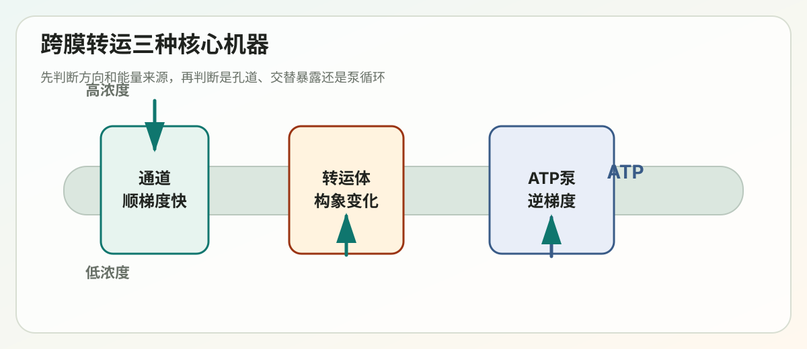
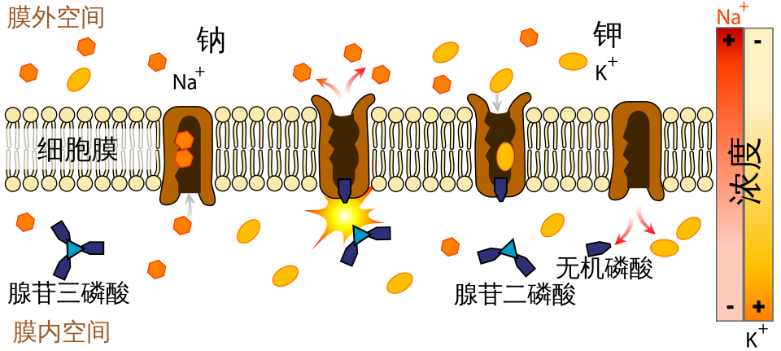

Lecture 10
第10讲学习讲义：跨膜转运与膜电学性质


对应课件：lecture10_Cross_Membrane_Transport.pdf
这一讲的主线是：膜本身是选择性屏障，细胞必须用通道、转运体和泵来精确控制物质流动；离子流动进一步形成膜电位和神经电信号。
这讲的核心问题
- 哪些分子能直接穿过脂双层，哪些不能？
- 通道和转运体有什么根本差别？
- 被动转运和主动转运如何区分？
- ATP 驱动泵、偶联转运体和光驱动泵分别如何供能？
- 离子通道如何实现选择性和门控？
- 膜电位和动作电位如何产生？
- 化学突触如何把电信号传递给下一个细胞？
一、细胞膜的选择性通透性
脂双层对不同分子的通透性差异很大。
| 分子类型 | 是否容易通过脂双层 | 例子 |
|---|---|---|
| 疏水小分子 | 容易通过 | O2、CO2、甾体激素 |
| 小的不带电极性分子 | 可慢速通过 | 水、乙醇、甘油 |
| 大的不带电极性分子 | 很难通过 | 葡萄糖、果糖 |
| 离子 | 几乎不能通过 | Na+、K+、Ca2+、Cl- |
| 大分子 | 不能通过 | 蛋白质、核酸 |
核心原因是：脂双层内部是疏水环境。带电或高度极性的分子如果进入膜内部，需要失去水化层，能量代价很高。
所以细胞膜既是屏障，也是选择系统。真正决定跨膜通量的往往不是脂质本身，而是膜上的转运蛋白。
二、细胞内外离子浓度差
细胞内外离子浓度并不相同，这是膜电位、渗透压、pH 调控和信号传导的基础。
典型趋势：
- 胞内 K+ 高，胞外 K+ 低。
- 胞外 Na+ 高，胞内 Na+ 低。
- 胞外 Cl- 高，胞内 Cl- 较低。
- 胞质游离 Ca2+ 极低，胞外和细胞器腔内 Ca2+ 较高。
尤其要记住 Ca2+：胞质游离 Ca2+ 被维持在非常低的水平，因此只要 Ca2+ 短暂升高，就能成为强信号。
三、跨膜转运的基本分类
1. 被动转运 passive transport
被动转运不需要外加能量，物质顺浓度梯度或电化学梯度移动。
包括：
- 简单扩散 simple diffusion：疏水小分子直接通过脂双层。
- 通道介导扩散 channel-mediated diffusion：通过亲水孔道快速通过。
- 转运体介导扩散 transporter-mediated diffusion：通过蛋白构象变化转运。
2. 主动转运 active transport
主动转运把物质逆电化学梯度转运，必须有能量输入。
能量来源主要有三类：
- 偶联转运：用一种物质顺梯度移动释放的能量，驱动另一种物质逆梯度转运。
- ATP 驱动泵：直接水解 ATP。
- 光驱动泵：利用光能，如细菌视紫红质。
四、通道和转运体的根本区别
| 特征 | 通道 channel | 转运体 transporter |
|---|---|---|
| 工作方式 | 形成亲水孔道 | 结合底物后构象变化 |
| 转运速度 | 极快，常达 10^8 离子/秒 | 较慢，约 10^2-10^4 分子/秒 |
| 饱和性 | 更接近扩散通量 | 类似酶，有 Vmax 和 Km |
| 方向 | 只能顺电化学梯度 | 可被动，也可主动 |
| 典型对象 | 离子、水 | 糖、氨基酸、离子、小分子 |
一句话记忆：通道像开门，转运体像旋转门；泵则是花钱逆流运货。
五、转运体：交替暴露模型
转运体又称 carrier、permease 或 solute carrier。它们通常经历三种状态：
1. 外开放 outward-open：结合位点朝向胞外。 2. 封闭 occluded：底物被包在蛋白内部。 3. 内开放 inward-open：结合位点朝向胞内，释放底物。
这个机制叫 alternate access model，意思是结合位点不会同时暴露在膜两侧，从而避免形成开放通道。
六、单向转运体 uniporter
Uniporter 只转运一种分子，通常顺浓度梯度进行。
典型例子是 GLUT 家族葡萄糖转运体。
GLUT1 可把葡萄糖从胞外转运入细胞，常见于需要稳定葡萄糖供应的组织。不同 GLUT 同源物在不同组织中表达，使细胞根据自身代谢需求调节葡萄糖摄取。
七、偶联转运体：symporter 与 antiporter
偶联转运体把一种物质顺梯度移动的能量，耦合给另一种物质的转运。
1. 同向转运 symporter
两种物质向同一方向移动。
经典例子：SGLT1，Na+/glucose symporter。
小肠上皮细胞顶端膜上的 SGLT1 利用 Na+ 顺电化学梯度进入细胞的能量，把葡萄糖逆浓度梯度带入细胞。这属于继发性主动转运，因为真正的能量来源是 Na+-K+ 泵预先建立的 Na+ 梯度。
2. 反向转运 antiporter
两种物质向相反方向移动。
典型例子：
- Na+/H+ exchanger：调节胞内 pH。
- Cl-/HCO3- exchanger：参与酸碱平衡。
理解 antiporter 时，关键是看哪一个离子顺梯度移动、哪一个分子被“搭便车”逆梯度移动。
八、跨细胞转运：小肠吸收葡萄糖
小肠上皮细胞吸收葡萄糖是理解极性细胞转运的经典模型。
- 顶端膜 facing gut lumen：SGLT1 用 Na+ 梯度把葡萄糖带入细胞。
- 基底侧膜 facing blood：GLUT2 让葡萄糖顺浓度梯度进入血液。
- 基底侧膜还有 Na+-K+ 泵，持续把 Na+ 泵出细胞，维持 Na+ 梯度。
- 紧密连接 tight junction 防止顶端和基底侧膜蛋白混合。
这个例子说明：同一个细胞不同膜域的转运蛋白不对称分布，可以产生方向性运输。
九、P 型 ATPase
P 型 ATPase 的共同特点是在工作循环中自身一个 Asp 残基会被暂时磷酸化。
1. Na+-K+ 泵
Na+-K+ ATPase 每消耗 1 个 ATP：
- 泵出 3 个 Na+。
- 泵入 2 个 K+。
它是生电性的 electrogenic，因为每个循环净移出一个正电荷。
它的重要性包括：
- 维持 Na+ 和 K+ 梯度。
- 为继发性主动转运提供能量基础。
- 对静息膜电位有贡献。
- 消耗大量细胞 ATP。
2. Ca2+ 泵
SERCA 位于肌浆网或 ER 膜上，把胞质 Ca2+ 泵入 ER 腔储存。
它的重要意义是维持胞质低 Ca2+。在肌肉细胞中，Ca2+ 短暂释放触发收缩，随后 SERCA 把 Ca2+ 泵回储库，使细胞恢复静息状态。
3. Flippase
某些 P 型 ATPase 作为磷脂翻转酶，把 PS 和 PE 从外叶翻到内叶，维持膜脂不对称。
十、V 型 ATPase、F 型 ATP synthase 与 ABC 转运体
1. V 型 ATPase
V 型 ATPase 水解 ATP，把 H+ 泵入细胞器腔内，用于酸化溶酶体、内体和植物液泡等区室。
2. F 型 ATP synthase
F 型 ATP 合酶通常反向利用 H+ 顺梯度流动释放的能量合成 ATP，位于线粒体内膜和叶绿体类囊体膜。
3. ABC 转运体
ABC 是 ATP-binding cassette。典型 ABC 转运体具有两个跨膜结构域和两个核苷酸结合结构域。
真核 ABC 转运体多作为输出体，能排出脂质、药物和代谢物。
临床相关例子：
- MDR1/P-glycoprotein 可把化疗药物泵出肿瘤细胞，导致多药耐药。
- CFTR 属于 ABC 家族，但作为 Cl- 通道发挥作用；突变可导致囊性纤维化。
十一、离子通道的基本性质
离子通道有四个关键特点：
- 高选择性：只允许特定离子高效通过。
- 高速率：比转运体快很多。
- 被动性：只能顺电化学梯度。
- 可门控：能根据电压、配体或机械刺激打开和关闭。
十二、K+ 通道为什么能选择 K+ 而不是 Na+
这个问题非常经典，因为 Na+ 比 K+ 小，但 K+ 通道却偏好 K+。
原因不是简单“孔太小”，而是选择性滤器的结合几何。
K+ 在水中有水化层。进入通道前需要脱水，这需要能量。K+ 通道选择性滤器内的羰基氧原子排列成刚好适合 K+ 的距离，可以替代水分子与 K+ 相互作用，补偿脱水能量。
Na+ 太小，不能同时与这些羰基氧原子充分接触，脱水损失无法被补偿，因此不容易通过。
所以选择性来自：脱水代价 + 滤器配位补偿是否匹配。
十三、通道门控类型
离子通道可以被不同信号控制：
- 电压门控 voltage-gated：响应膜电位变化，如电压门控 Na+ 通道。
- 胞外配体门控：神经递质结合后开放，如烟碱型乙酰胆碱受体。
- 胞内配体门控：Ca2+、cAMP 等第二信使调控。
- 机械门控 mechanically gated：响应拉伸或压力，如听觉毛细胞相关通道。
十四、水通道 aquaporin
水虽可缓慢通过脂双层，但许多细胞需要高速水转运，因此使用 aquaporin。
Aquaporin 的特点：
- 每个单体有 6 个跨膜 alpha 螺旋。
- 四个单体形成同源四聚体。
- 每个单体本身就是一个水通道。
Aquaporin 允许水通过，但阻止 H+ 通过。其关键机制是水分子在通道中单列通过，并在狭窄区域改变取向，从而打断质子沿水分子链跳跃的 Grotthuss 机制。
十五、膜电位从哪里来
膜电位是膜两侧电荷分布不均形成的电压差。多数动物细胞内侧相对外侧为负。
静息膜电位主要来自：
- 细胞内 K+ 浓度高。
- 质膜有 K+ 泄漏通道。
- K+ 顺浓度梯度外流。
- 胞内留下带负电的有机阴离子和蛋白质。
- 电压梯度逐渐抵消 K+ 继续外流的化学驱动力。
当化学梯度和电梯度达到平衡时，就得到某种离子的平衡电位。
十六、Nernst 方程的直觉
Nernst 方程连接浓度差和电压差。
对于一种离子：
V = 2.3 RT / zF * log10(Co / Ci)其中 Co 是胞外浓度，Ci 是胞内浓度，z 是离子价数。
在 37 摄氏度，对一价离子，浓度比每相差 10 倍，平衡电位约相差 62 mV。
重要原则：
膜对哪种离子通透性越高，膜电位越接近该离子的平衡电位。
静息细胞对 K+ 通透性最高，所以静息膜电位接近 K+ 平衡电位。
十七、动作电位
动作电位是神经元、肌细胞等可兴奋细胞中的快速膜电位变化。
1. 静息期
K+ 泄漏通道开放，电压门控 Na+ 通道和延迟 K+ 通道大多关闭。膜电位约 -60 到 -70 mV。
2. 去极化上升期
刺激使膜电位达到阈值后，电压门控 Na+ 通道快速打开。Na+ 大量内流，膜电位迅速升高。
这是正反馈：
去极化导致更多 Na+ 通道打开，更多 Na+ 内流导致更强去极化。
3. 复极化下降期
Na+ 通道很快失活，同时延迟开放的电压门控 K+ 通道打开。K+ 外流使膜电位回落。
4. 不应期与单向传播
Na+ 通道有三种状态：
- closed
- open
- inactivated
刚发生动作电位的区域，Na+ 通道处于失活状态，暂时不能再次开放。这产生不应期，使动作电位沿轴突单向传播。
十八、化学突触传递
动作电位到达突触前末梢后：
1. 电压门控 Ca2+ 通道打开。 2. Ca2+ 内流。 3. 突触囊泡与突触前膜融合。 4. 神经递质释放到突触间隙。 5. 神经递质结合突触后受体。 6. 突触后细胞产生电信号或代谢反应。
两类突触后受体：
| 类型 | 本质 | 速度 | 特点 |
|---|---|---|---|
| Ionotropic receptor | 配体门控离子通道 | 快 | 直接把化学信号变成电信号 |
| Metabotropic receptor | GPCR 等 | 慢 | 通过第二信使间接调控 |
十九、神经元如何整合信号
一个神经元可接收成千上万个突触输入。信号整合主要发生在轴突小丘。
神经元通过两种方式整合输入：
- 空间总和：不同突触位置的输入相加。
- 时间总和：同一突触快速连续输入相加。
动作电位幅度通常是全或无的，刺激强度主要编码在动作电位发放频率中。
二十、光遗传学拓展
课件最后提到通道视紫红质 channelrhodopsin。它是来自绿藻的光门控阳离子通道。
科学家把 channelrhodopsin 表达到特定神经元中，就可以用光控制这些神经元的兴奋。这就是光遗传学 optogenetics 的基础，极大推动了神经环路研究。
二十一、常见误区
- 误区一：主动转运都直接消耗 ATP。继发性主动转运本身不水解 ATP，而是利用离子梯度。
- 误区二：通道和转运体都只是“孔”。转运体必须经历构象变化，并有饱和动力学。
- 误区三：Na+ 比 K+ 小，所以更容易过 K+ 通道。选择性取决于脱水补偿和滤器几何匹配。
- 误区四：膜电位只由 Na+-K+ 泵直接造成。泵建立浓度梯度，静息电位主要由 K+ 通透性产生。
- 误区五：动作电位强弱由幅度表示。动作电位通常全或无，强度主要由频率编码。
二十二、你必须会的关键词
- selective permeability
- simple diffusion
- facilitated diffusion
- active transport
- electrochemical gradient
- uniporter
- symporter
- antiporter
- Na+-K+ ATPase
- P-type ATPase
- V-type ATPase
- F-type ATP synthase
- ABC transporter
- ion channel
- selectivity filter
- aquaporin
- membrane potential
- Nernst equation
- action potential
- voltage-gated Na+ channel
- refractory period
- ionotropic receptor
- metabotropic receptor
- optogenetics
二十三、自测题
1. 为什么离子不能直接穿过脂双层？ 2. 通道和转运体在机制、速度和饱和性上有什么区别？ 3. SGLT1 为什么属于继发性主动转运？ 4. Na+-K+ 泵每个循环转运几个离子？为什么说它是生电性的？ 5. K+ 通道为什么能排斥更小的 Na+？ 6. Aquaporin 如何阻止 H+ 通过？ 7. 静息膜电位为什么接近 K+ 平衡电位？ 8. 动作电位的上升期和下降期分别由哪些通道主导？ 9. 为什么动作电位通常不会倒着传？ 10. Ionotropic receptor 和 metabotropic receptor 有什么区别？
二十四、考前速记版
脂双层对疏水小分子通透，对离子和大分子不通透。跨膜转运分被动和主动，主动转运需要能量。通道形成孔道，速度快，只能顺梯度；转运体通过构象变化工作，可被动也可主动。Na+-K+ 泵建立 Na+ 和 K+ 梯度，K+ 泄漏通道产生静息膜电位。动作电位由 Na+ 通道快速开放造成去极化，由 K+ 通道开放和 Na+ 通道失活造成复极化。突触把电信号转化为递质释放，再由离子型或代谢型受体传给下一个细胞。